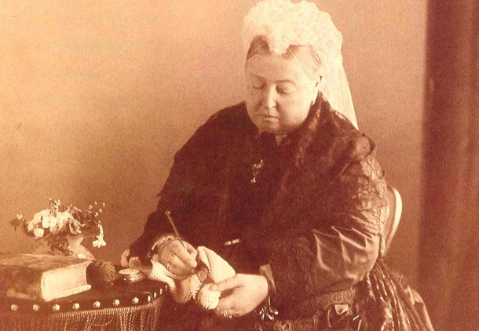
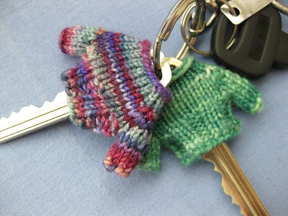

Crochet is a crafting practice that involves using a hook to create fabric from yarn or thread. Its origins are somewhat uncertain, but it is believed to have originated in the Middle East, where it was used to create lace-like fabrics. By the 1800s, crochet had spread throughout Europe, where it was used to create intricate doilies, table runners, and other decorative items. Crochet was particularly popular during the Victorian era, when it was seen as a refined and genteel activity.
Today, crochet remains a popular crafting practice, with enthusiasts around the world creating everything from blankets and scarves to intricate lace garments and amigurumi toys. While the basic technique of crochet has remained largely unchanged over time, there have been many innovations and advancements in the materials and tools used for crochet. Today's crocheters have access to a wide variety of yarns in different colors, textures, and fibers, as well as specialized hooks and other tools that make it easier to create more complex designs. Despite its long history, crochet continues to evolve and adapt to the changing needs and interests of crafters around the world.
